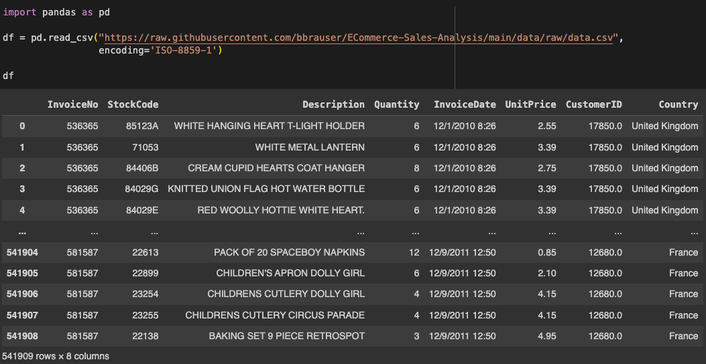
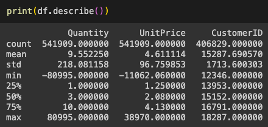
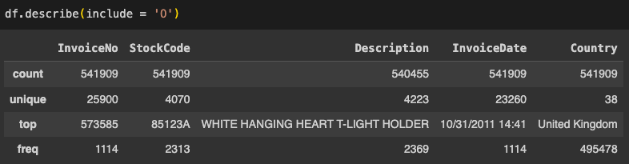
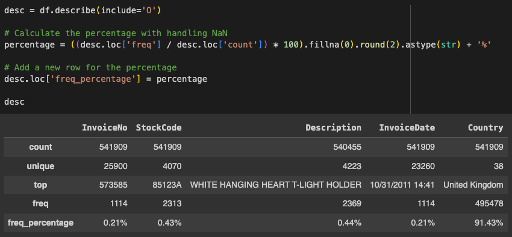
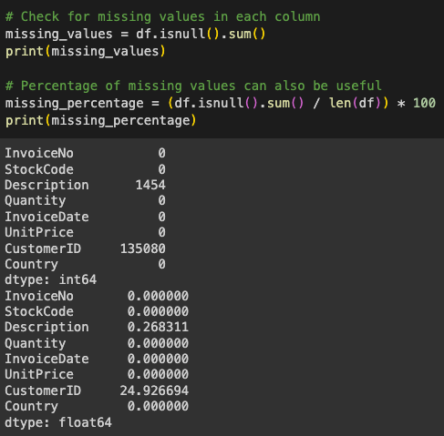
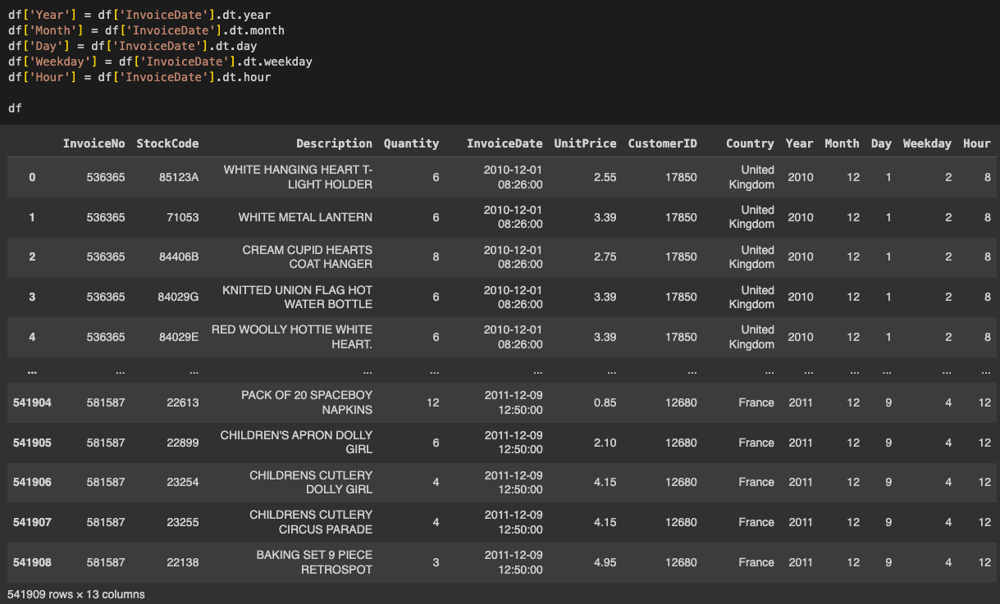

E-commerce has fundamentally transformed the way business is conducted around the world, offering unparalleled convenience and accessibility for both consumers and merchants. The rise of online shopping platforms, from mammoth giants like Amazon to specialized niche storefronts, has provided consumers with an endless variety of products right at their fingertips, without the constraints of geographical boundaries or traditional store hours. According to a report by Statista, global e-commerce sales are projected to grow from roughly 875 billion U.S. dollars in 2022 to over 1.3 trillion U.S. dollars in 2025. Furthermore, as per Oberlo, it's estimated that by 2025, over 2.77 billion people worldwide would have bought goods or services online. The meteoric growth and importance of e-commerce cannot be overstated; it has revolutionized retail, logistics, and even the global supply chain, driving innovation and forging new pathways for international trade and commerce. (Sources: Statista, Oberlo, 2023).
To begin this analysis, we must first send it to the cleaners! Using a Jupyter notebook, we will read in the data, gather some basic info on both the numerical and categorical columns, deal with missing values, and save that data to a cleaned CSV. The Python library ‘pandas’ can import the csv into the notebook:
Now that we have the data loaded into the dataframe, let’s take a look at some basic information using the info() method:
The describe() method gives us some descriptive statistics on the numerical variables of our dataset, such as the count, mean, and standard deviation. The only numerical variables in the dataset are Quantity, UnitPrice, CustomerID.
CustomerID should really be a string, as it is the unique identifier and not subject to analysis (we will fix this later on), but there are some interesting things to note in Quantity and UnitPrice. If we look at the minimum for each column, we can see that there are negative numbers. In Quantity, a negative value represents a "return transaction" instead of a "purchase transaction". Businesses use quantity sold * unit price to determine sales revenue. A return transaction results in a decrease in revenue. In UnitPrice, there are only two negative values, as you can see below:
Now that we’ve seen descriptive statistics of the numerical variables, it’s now time to take a look at the categorical variables.
Here we can see there are 6 categorical variables (InvoiceNo, StockCode, Description, InvoiceDate, CustomerID, and Country). For each of the variables, we can see the number of rows, the number of unique values, the most frequent value found, and how many times that value occurred in the column. As seen before, CustomerID is missing values. For a further look into the descriptive statistics, let’s find the percentage of each unique value in the columns:
Now is the time we have to make some decisions about what to do about missing values. Let’s visualize the missing data in a heatmap:
Each line above the column names in the heatmap represent a single row of data. Purple indicates that there is a value present, and yellow represents a missing value. As discussed before, CustomerID has about 25% of its data missing. But we can also see that ‘Description’ is missing some values as well. If we use a combination of the isnull() and sum() methods, we can see just how many rows in each column are missing data.
Now that we know what columns are missing data, we have to make a decision on what to do with those missing rows. For Description, we will simply fill in the missing values with “NO DESCRIPTION AVAILABLE” as less than 1% of the values are missing. Similarly, we are going to use “NO CUSTOMER ID” in CustomerID so we can still make use of the column even though a substantial proportion is missing.
The last thing we want to do to clean this data concerns the InvoiceDate column. As of right now, InvoiceDate is a string object. We want to make it a datetime object so we can perform some time series analysis. To do this, we will make use of panda’s to_datetime() method.
From this datetime object, we will extract the year, month, day, weekday, and hour and make them new variables. As a note, dt.weekday returns the day of the week with Monday=0 and Sunday=6.
Now that we have cleaned and preprocessed the dataset, we want to save this so we don’t have to do all of these steps again. We can use the to_csv() method to save it to a csv file:
We are now ready to perform some exploratory data analysis, which will be the subject of our next post.